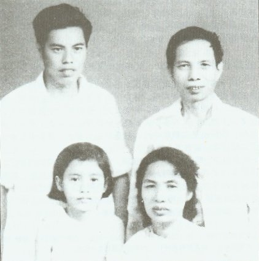

生长在传统的乡绅之家，有五个兄弟、两个妹妹。
林连玉的五弟曾任国民党永春县的县委书记，也曾任永春县的银行行长、区长，他和孩子后来移居厦门，文化大革命时遭到打击。
林连玉的其中一位妹妹，林子贞，三十年代在集美女师范毕业，后来在福建教书，目前她的子女在厦门同安；另一位妹妹叫林子华，移居台湾，听说她儿子是台湾旺旺集团的董事。
大部分少年时代在厦门度过。当了学徒后，到集美师范学校求学。
1924年，他以优异的成绩毕业于集美学校师范部文史地系，之后他受挽留在母校任教。
1927年，时局动乱，林连玉因学校关闭而前往南洋，他先在霹雳州爱大华任教，之后在印尼爪哇任抹任教。
1931年，他离开任抹，被应聘到马来亚巴生共和学校任教。
1935年，他在吉隆坡尊孔学校服务。直至1961年8月被政府驱逐离校为止，他都没有离开过尊孔（除了战争期间）。
1941年12月，太平洋战争爆发，日军南侵，他参加雪兰莪医药辅助队并一度受伤。
1961年8月22日，林连玉被教育部长取消教师注册。
1961年8月24日，林连玉所有的著作，被政府宣布为禁书。
1964年10月23日，他的公民权正式被褫夺。
1964年11月16日，他接获通知公民权已被褫夺，接受报界访问时表示：“我个人的利益早置之度外，为华文教育牺牲永不后悔！”
由此，他被迫隐居在吉隆坡二十年。
点击查看林连玉公民权证书1956年5月6日，教育报告书发表前，林连玉率领董教总代表团与教育部长会谈，并争取到敦阿都拉萨保证不把“最后目标”列入新法令中。
1956年8月，他巧妙利用教育部的“火炬运动”，使华人子弟普遍登入华校就读。
他成功领导教总筹募基金。这笔基金，后来被用以建立教总大厦。
1957年1月，他提出教育工作者两大使命：教导学生效忠马来亚与培养孩子共存共荣的观念。
他领导教总及马华教育中央委员会忙于应付华文中学改制问题、超龄生问题、学潮问题等。
经过努力付出，他成功稳住了华文中学的阵脚，也解决了华校超龄生问题。
1959年4月，他领导全马华人注册社团代表大会通过华人对教育总要求，其要点为：(1)各民族教育以母语为媒介；(2)各民族教育一律平等；(3)允许各民族自由选择其教育；(4)尊重各民族的文化和语言。
1960年8月，林连玉表明不能接受教育报告书，因为接受的结果是华文中学立刻要改为英文中学，并且在七年后英文作为官方语文的地位被更改为马来文后改成马来中学。
1961年3月，他在教总工作委员会议上指出：“华文中学是华人文化的堡垒，津贴金可以被剥夺，独立中学不能不办。”
8月，他在教总理事扩大会议上指当年曾经争取到时任教育部长敦阿都拉萨答应不把“最后目标”列入教育法令中。
同月，他获知即将褫夺公民权。
林连玉捍卫母语教育权和争取大马华人公民权。
1954年8月，他以教总名义提出列华语为官方语文之一。
1954年11月，他与马华公会会长陈祯禄爵士联手努力，使教育部要在华校开英文班的计划落空。
1955年1月，他率领董教总代表团到马六甲与东姑阿都拉曼为首的巫统领导层会谈。
为了联盟竞选的便利，联盟答应将废除《1952年教育法令》，以及重新厘订对各民族公平合理的教育政策，并增加拨款两百万给华文中小学。
1956年4月，他促成全马华团争取公民权大会，要求通过四大要求：(1)当地出生者为本地公民；(2)留居满五年者可以申请公民权；(3)公民义务与权利平等；(4)华文为官方语文之一。
此页面的内容主要参考以下来源：东方日报，星洲日报，新加坡联合早报，维基百科。
1) https://llgcultural.com/9792
2) https://llgcultural.com/11270
3) https://zh.wikipedia.org/zh-my/%E6%9E%97%E8%BF%9E%E7%8E%89
5) https://www.orientaldaily.com.my/news/maidong/2015/12/06/116340
{kind=link}